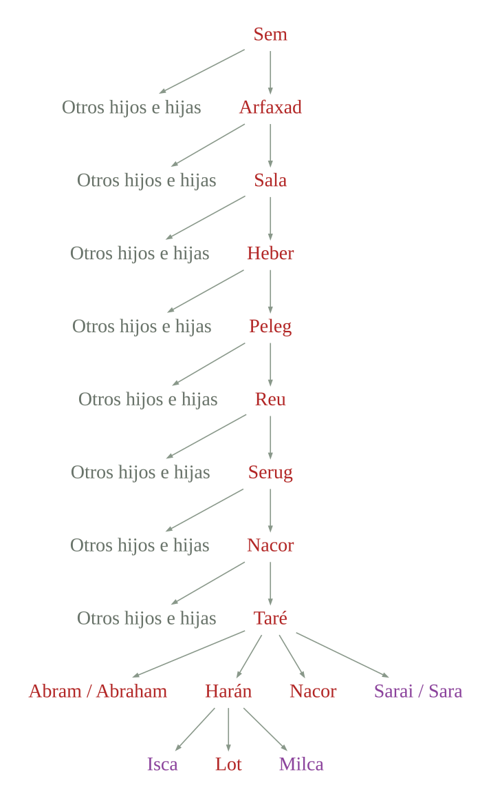
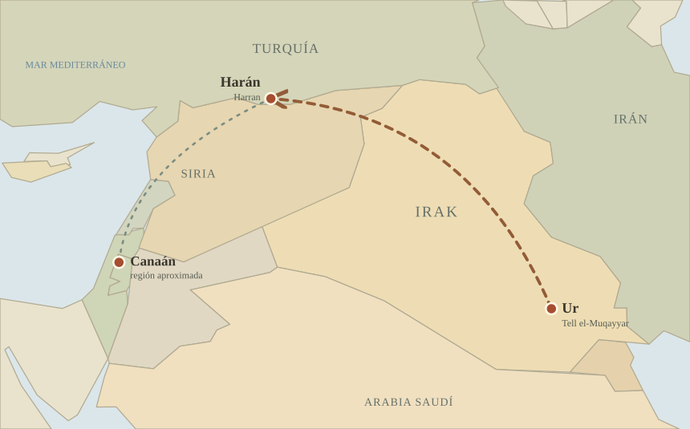

11:10 Estas son las generaciones de Sem: Sem, de edad de cien años, engendró a Arfaxad, dos años después del diluvio.
11:11 Y vivió Sem, después que engendró a Arfaxad, quinientos años, y engendró hijos e hijas.
11:12 Arfaxad vivió treinta y cinco años, y engendró a Sala.
11:13 Y vivió Arfaxad, después que engendró a Sala, cuatrocientos tres años, y engendró hijos e hijas.
11:14 Sala vivió treinta años, y engendró a Heber.
11:15 Y vivió Sala, después que engendró a Heber, cuatrocientos tres años, y engendró hijos e hijas.
11:16 Heber vivió treinta y cuatro años, y engendró a Peleg.
11:17 Y vivió Heber, después que engendró a Peleg, cuatrocientos treinta años, y engendró hijos e hijas.
11:18 Peleg vivió treinta años, y engendró a Reu.
11:19 Y vivió Peleg, después que engendró a Reu, doscientos nueve años, y engendró hijos e hijas.
11:20 Reu vivió treinta y dos años, y engendró a Serug.
11:21 Y vivió Reu, después que engendró a Serug, doscientos siete años, y engendró hijos e hijas.
11:22 Serug vivió treinta años, y engendró a Nacor.
11:23 Y vivió Serug, después que engendró a Nacor, doscientos años, y engendró hijos e hijas.
11:24 Nacor vivió veintinueve años, y engendró a Taré.
11:25 Y vivió Nacor, después que engendró a Taré, ciento diecinueve años, y engendró hijos e hijas.
11:26 Taré vivió setenta años, y engendró a Abram, a Nacor y a Harán.79
Árbol genealógico 06: De Peleg a la familia de Taré

Ver lámina 06 en el Apéndice Genealógico ↗11:27 Estas son las generaciones de Taré: Taré engendró a Abram, a Nacor y a Harán; y Harán engendró a Lot.
11:28 Y murió Harán antes que su padre Taré en la tierra de su nacimiento, en Ur de los caldeos.
11:29 Y tomaron Abram y Nacor para sí mujeres; el nombre de la mujer de Abram era Sarai, y el nombre de la mujer de Nacor, Milca, hija de Harán, padre de Milca y de Isca.80
11:30 Mas Sarai era estéril, y no tenía hijo.
11:31 Y tomó Taré a Abram su hijo, y a Lot hijo de Harán, hijo de su hijo, y a Sarai su nuera, mujer de Abram su hijo, y salió con ellos de Ur de los caldeos, para ir a la tierra de Canaán; y vinieron hasta Harán, y se quedaron allí.81
11:32 Y fueron los días de Taré doscientos cinco años; y murió Taré en Harán.

Notas del editor
- 79La mención de los tres hijos de Taré no implica que nacieran a la vez ni en ese orden. Según Génesis 11:32, Taré murió a los 205 años, mientras que Génesis 12:4 indica que Abram tenía 75 años al salir de Harán. Si, como afirma Hechos 7:4, Abram partió después de la muerte de su padre, habría nacido cuando Taré tenía aproximadamente 130 años. Es posible que Abram figure primero por su importancia en el relato y no por ser el primogénito. ↩
- 80Harán, hermano de Abram y Nacor, murió antes que su padre Taré, dejando al menos tres hijos: Lot, Milca e Isca. Nacor se casó con Milca, su propia sobrina. Algunas tradiciones judías la identifican con Sarai, esposa de Abram, aunque el texto bíblico las presenta con nombres distintos. ↩
- 81Ur de los caldeos suele identificarse con la antigua ciudad sumeria de Ur, situada en el sur de Mesopotamia (Irak); aunque existen otras propuestas que la sitúan más al norte. Según el relato, Taré salió de Ur con parte de su familia rumbo a Canaán, pero se establecieron en Harán, ciudad del norte de Mesopotamia (actual Turquía), donde murió. ↩